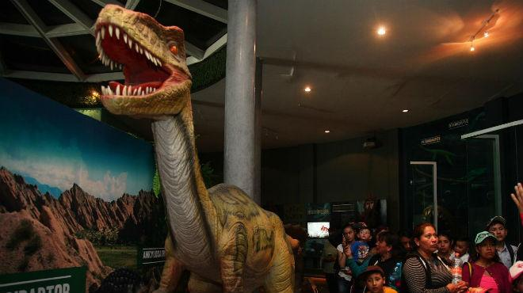

Regresar
Volver al inicio
Jurásica
Jurásica es un mini museo interactivo sobre dinosaurios. En la entrada hay un par de mamuts y el esqueleto de un tigre dientes de sable. También hay un diplodocus bebé que da la bienvenida a los visitantes. Afuera del museo también tienen dinosaurios enormes miden casi 20 metros cada uno, los cuales tienen movimientos y sonidos reales.
Algunas piezas tienen un código QR de realidad aumentada que brindarán al visitante imágenes virtuales a través de sus dispositivos móviles.

uniónedomex.com
El aviario
El aviario del Parque Ecológico Ehécatl alberga a más de 185 especies y por lo menos 26 distintas, por lo que este lugar se ha convertido en un oasis en el desierto, un concierto de cantos diversos y un espectáculo multicolor que puede ser disfrutado por los visitantes que acudan de martes a domingo en un horario hábil y sin costo alguno.
thuix.com